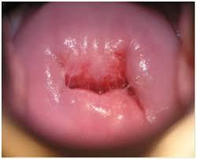
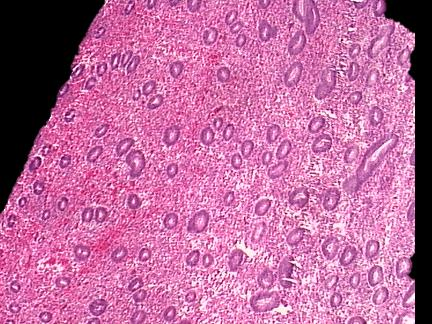
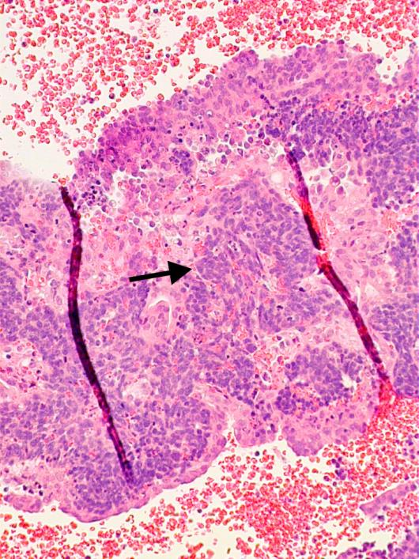
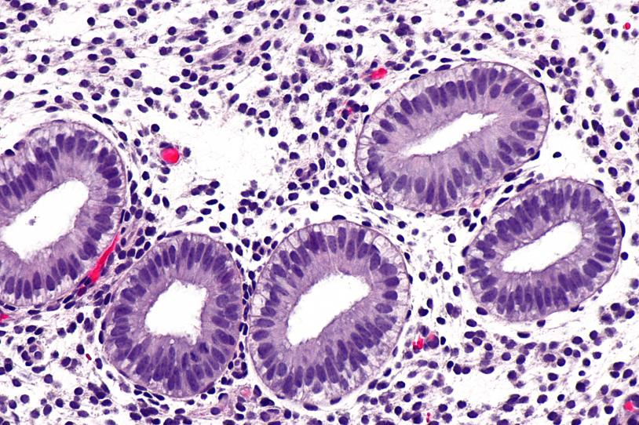
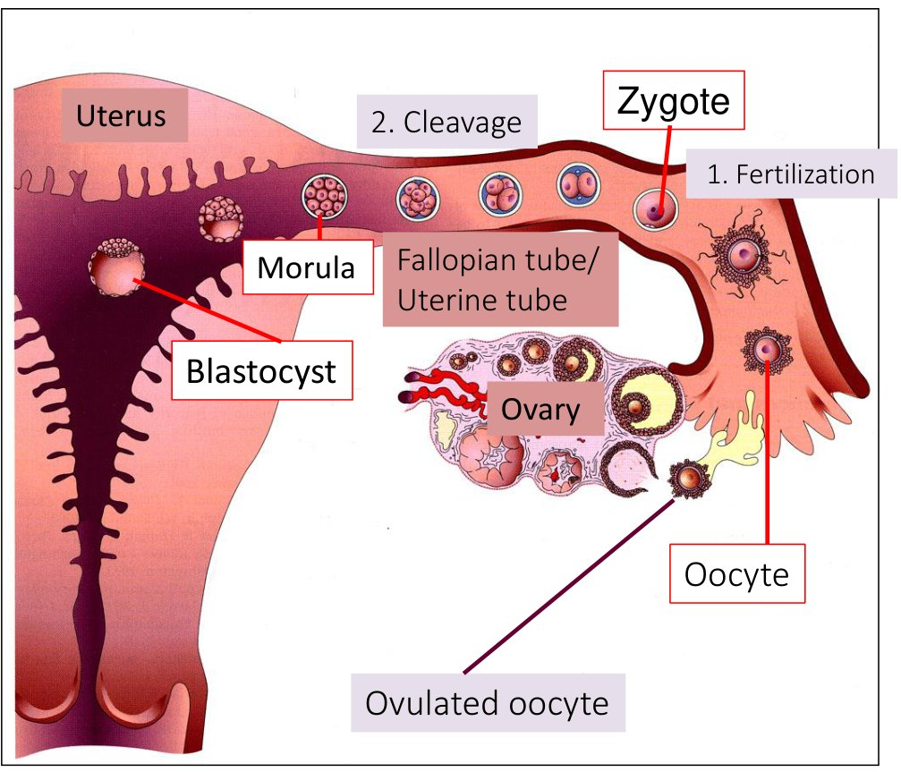
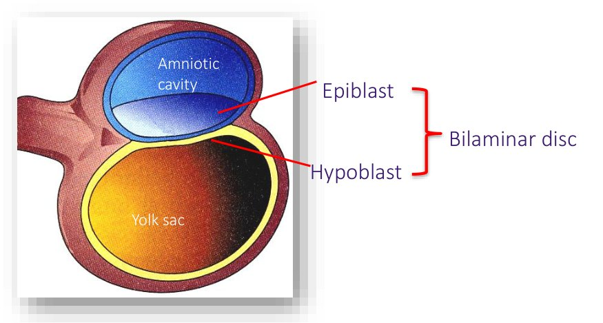
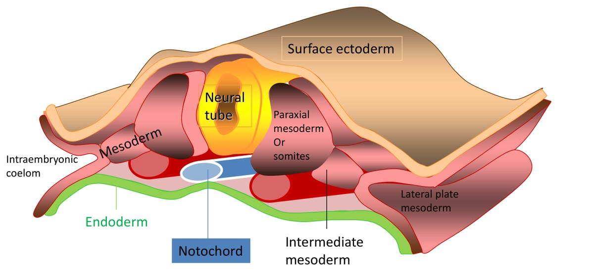

Histology of the Gynecologic Tract & Early Embryogenesis
- One plan, repeated. Every organ in the tract is mucosa → muscle → outer coat. Only the mucosa changes — name the epithelium and you have named the organ.
- The transformation zone is where squamous has replaced columnar. It is the most common site of cervical neoplasia, and what every Pap test is trying to sample.
- Endometrium in one line each: straight glands + mitoses = proliferative (estrogen). Coiled sawtooth glands + secretions = secretory (progesterone, so ovulation happened). Collapse + blood = menstrual.
- Follicle sequence: primordial → primary → secondary (antrum) → Graafian → corpus luteum → corpus albicans — unless hCG rescues it.
- One week, one job. Week 1 travel and implant · Week 2 make two of everything · Week 3 make three germ layers · Week 4 close the tube and fold the body.
- Fertilization is in the ampulla — which is also the commonest ectopic site. Week 2 is the rule of twos, and the syncytiotrophoblast makes hCG. Neuropores close ~day 25 (cranial) and ~day 27 (caudal): anencephaly and spina bifida.
- Teratogen windows: weeks 0–2 all-or-none · weeks 3–8 peak risk of major structural anomalies · week 9 to term mostly functional and minor.
Learning Objectives
- Identify the main structures in the female pelvis, and describe the basic histologic features of vulva, vagina, uterus, cervix, fallopian tube and ovary — including the anatomical parts of the fallopian tube.
- Define the cervical transformation zone and state its clinical importance.
- Describe the changes in the uterus and ovary through a normal menstrual cycle, including the sequence from oocyte to mature follicle.
- Describe fertilization, implantation and week 1 of embryonic life, with clinical correlates.
- Describe embryogenesis from weeks 2–4 and its clinical applications.
- Reflect on the factors that affect embryogenesis.
The Normal Tract
What each organ is made of, and how the uterus and ovary change across a cycle.
Start Here: It Is the Same Wall Every Time
The lecture moves organ by organ, which makes it look like six unrelated things to memorise. It is not. Every hollow organ in this tract is built to the same three-layer plan, and the names change more than the structure does.

The Tract, Organ by Organ
Click any structure for its epithelium, the feature that identifies it down the scope, and what goes wrong with it.
The gynecologic tract — what lines what
Click any structure →Select a structure to see what lines it, how you recognise it, and why it matters.
Vulva
Labia majora — true skin: keratinized stratified squamous with hair follicles and eccrine, apocrine and sebaceous glands. Labia minora — non-keratinized stratified squamous, usually no adnexae. That single difference is how you tell them apart on a slide.
Bartholin’s glands sit posterolateral to the introitus: mucinous acini, ducts lined by transitional epithelium, becoming squamous at the orifice. Skene’s glands are the paired periurethral mucus-secreting glands.
Pathology: lichen sclerosus (inflammatory, and a risk factor), leukoplakia, and squamous cell carcinoma.Vagina
 Non-keratinizing stratified squamous, no keratin layer at the surface and no glands.
Non-keratinizing stratified squamous, no keratin layer at the surface and no glands.
Non-keratinizing stratified squamous, and importantly no glands — vaginal lubrication is transudate plus cervical mucus, not vaginal secretion.
The epithelium is estrogen-dependent: estrogen loads it with glycogen, which lactobacilli ferment to lactate and keep the pH acidic.
After menopause estrogen falls, the epithelium thins and glycogen drops — atrophic vaginitis, and a rise in pH.Cervix
The lowermost part of the uterus, connecting uterus to vagina. It has two different epithelia, which is the whole point of it:
Ectocervix (facing the vagina) — non-keratinizing stratified squamous. Endocervix (the canal) — mucus-secreting columnar glandular. Between them, the transformation zone.
The transformation zone is the most common site of cervical neoplasia — covered in its own section below.Endometrium
Glands plus stroma, in two layers. The functionalis is the outer layer that responds to hormones and is shed each month. The basalis is the deep layer that is never shed and regenerates the functionalis afterwards.
Its appearance changes completely across the cycle — that is the second half of this lecture.
If the basalis is destroyed (over-aggressive curettage, infection), the functionalis cannot regrow — intrauterine adhesions and amenorrhoea, or Asherman syndrome.Myometrium
Thick interlacing bundles of smooth muscle — the bulk of the uterus, and what generates labour contractions. Covered on the outside by serosa (peritoneum).
Leiomyoma (fibroid) is a benign smooth muscle tumour arising here — the commonest tumour of the female genital tract.Fallopian tube
 Tube mucosa: branching plicae lined by ciliated and secretory columnar cells.
Tube mucosa: branching plicae lined by ciliated and secretory columnar cells.
From uterus outward: intramural (within the uterine wall) → isthmus (narrow) → ampulla (wide, longest) → infundibulum, ending in the fimbriae that drape over the ovary.
Mucosa is ciliated and secretory columnar epithelium thrown into elaborate folds (plicae) — the branching, papillary lumen is how you recognise a tube instantly. Muscularis provides the peristalsis that moves the ovum.
Fertilization normally happens in the ampulla, and the ampulla is also the single commonest site of ectopic implantation.Ovary
 Cuboidal surface epithelium over the dense spindled stroma of the cortex.
Cuboidal surface epithelium over the dense spindled stroma of the cortex.
Surface epithelium — a single layer of cuboidal cells. Cortex — the outer layer, holding the stroma, the specialised granulosa and theca cells, and every germ cell and follicle. Medulla — inner stroma, vessels and nerves. Hilum — where those vessels and nerves enter.
Two jobs: mature oocytes for ovulation, and make sex steroids. Ovarian tumours are classified by which of these three cell populations they arise from — see the last section.The Transformation Zone
If you take one thing from the cervix, take this. Two epithelia meet at the cervix, and where they meet, one is actively converting into the other.


Metaplasia means actively dividing immature cells. HPV infects dividing basal-type cells, and integration into a dividing cell is what allows persistent infection to progress to dysplasia. Mature squamous epithelium and mature glandular epithelium are both far less vulnerable — the vulnerable population exists only in the transformation zone, and only while metaplasia is going on.
That is the entire rationale for cervical screening: the Pap test scrapes the transformation zone, and a sample without endocervical or metaplastic cells may not have reached it. If cytology is abnormal, biopsy follows for tissue diagnosis.
The Endometrium Through the Cycle
Three appearances, and each one is a direct readout of which hormone is dominant. If you can name the hormone, you can predict the picture.


1 · Proliferative, low power. Numerous small, round, evenly spaced glands — these are straight tubes cut across. 2 · Secretory, low power. Thicker, and the glands are now tortuous and gaping — the “sawtooth” outline, with secretion in the lumens.
2 · Secretory, low power. Thicker, and the glands are now tortuous and gaping — the “sawtooth” outline, with secretion in the lumens.

3 · Menstrual. The architecture has gone: collapsed crumbling stroma, broken glands, and blood everywhere. Proliferative, high power. Pseudostratified, crowded, darkly staining nuclei with mitotic figures in both gland and stroma. Mitoses are the finding.
Proliferative, high power. Pseudostratified, crowded, darkly staining nuclei with mitotic figures in both gland and stroma. Mitoses are the finding.

Secretory, high power. Nuclei pushed to the base by secretory vacuoles, secretion in the lumen, and no mitoses.| If you see… | It is… |
|---|---|
| Straight tubular glands + mitoses | Proliferative — estrogen-driven |
| Coiled sawtooth glands + secretions, no mitoses | Secretory — progesterone-driven, so ovulation has happened |
| Collapsed stroma, broken glands, blood | Menstrual |
Endometrial sampling answers a small number of specific questions: infertility (is the endometrium secretory, i.e. did she ovulate?), abnormal uterine bleeding, and any post-menopausal bleeding, where the job is to rule out malignancy. It is also indicated when endometrial cells appear on a Pap smear in a woman over 45 — those cells have no business being there.
The link back to physiology: a secretory endometrium is proof of ovulation, because only the corpus luteum makes enough progesterone to produce it. Persistent proliferative endometrium in a woman who should be cycling means unopposed estrogen — the setup for hyperplasia.
The Ovary Through the Cycle
The follicle is a structure that grows, ruptures, converts into an endocrine gland, and then scars. Each stage has a name and a look.

 Developing follicle in the cortex — oocyte, granulosa layers around it, theca outside that.
Developing follicle in the cortex — oocyte, granulosa layers around it, theca outside that.
 Corpus luteum, low power. Large and conspicuously folded — the collapsed wall of the ruptured follicle.
Corpus luteum, low power. Large and conspicuously folded — the collapsed wall of the ruptured follicle.
| Ovarian cell of origin | Benign | Borderline | Malignant |
|---|---|---|---|
| Surface epithelial | Serous cystadenofibroma | Serous borderline tumour | High-grade serous carcinoma |
| Germ cell | Teratoma (usually benign) · dysgerminoma (malignant) | ||
| Sex cord–stromal | Fibroma · granulosa cell tumour | ||
The classification is not arbitrary trivia — it follows the three cell populations in the section above. A granulosa cell tumour comes from the cell that makes estradiol, and behaves accordingly (precocious puberty, post-menopausal bleeding, endometrial hyperplasia).
After Fertilization
Part 1 ended with a corpus luteum and a secretory endometrium — a tract primed to receive an embryo. This is what arrives, and what it becomes over the next four weeks.
Week 1: The Journey
Everything in week 1 happens while the embryo is in transit. It is dividing the whole way down the tube, but not growing — each division halves the cell size, so the whole ball stays the size of the original oocyte until it reaches the uterus.

| Step | What actually happens |
|---|---|
| Fertilization | One of 200–300 million sperm reaches the oocyte in the ampulla. The acrosomal cap releases enzymes to get through the corona radiata and zona pellucida; contact with the oocyte membrane triggers the zonal reaction, the block to polyspermy. Pronuclei fuse → diploid zygote, 44 + XX or XY. |
| Cleavage | Mitoses producing blastomeres: 2 → 4 → 8 → 16 → 32. At 16–32 cells it is a morula. |
| Blastulation | Day 4: a cavity appears and it becomes a blastocyst, sorted into embryoblast (inner) and trophoblast (outer). |
| Hatching | Day 5: enzymes dissolve the zona pellucida. Nothing can implant through it, so it must go. |
| Decidual reaction | The secretory endometrium from Part 1 is the landing site — progesterone from the corpus luteum has already filled those coiled glands with glycogen. If implantation happens the secretions feed the embryo; if not, it is shed as menses. |
Implantation anywhere other than the uterine cavity. It is a surgical emergency because those sites cannot accommodate a growing pregnancy and rupture with major haemorrhage.

| Site | Share |
|---|---|
| Tubal — ampulla ~70%, isthmus ~12%, fimbrial ~11%, interstitial ~2% | ~95% |
| Ovarian | ~3% |
| Abdominal | ~1% |
| Cervical | rare |
Note it is the ampulla in both the normal and the abnormal story: it is where fertilization happens, so it is where a delayed embryo implants. Anything that slows tubal transport — prior PID with scarring, prior ectopic, tubal surgery, smoking — raises the risk.
Percentages from Bouyer et al., Hum Reprod 2002;17:3224–30 (1,800 consecutive cases). The lecture slide gives 96–98% tubal, 4% ovarian, 1% cervical and 1% abdominal, which sums to more than 100% — the figures above are the population-based numbers.
Week 2: The Rule of Twos
This is the most memorable week, because everything in it splits in half. Learn the three pairs and week 2 is done.

The rest of week 2 is placenta construction. Extraembryonic mesoderm covers the inner surface of the cytotrophoblast and the outer surfaces of the yolk sac and amnion; a cavity opens within it — the chorionic cavity (extraembryonic coelom). Chorionic villi — built from cytotrophoblast, syncytiotrophoblast and extraembryonic mesoderm together — invade maternal tissue, fetal vessels grow into them, and the uteroplacental circulation begins.
The syncytiotrophoblast secretes human chorionic gonadotropin. Its job is to keep the corpus luteum alive so progesterone keeps flowing — without it the corpus luteum regresses on schedule and the endometrium is shed with the pregnancy in it. The placenta takes over steroid production at around 7–9 weeks (the luteal–placental shift), after which the corpus luteum is no longer needed.
hCG shares the α subunit of LH, FSH and TSH and acts on the LH receptor — the link straight back to the HPG axis lecture. It is detectable throughout pregnancy, which makes it the pregnancy test.
Precision point: the slide says low hCG indicates ectopic pregnancy. More accurately, it is the trend that matters — a rise of <35–50% over 48 hours, or a plateau, suggests a non-viable pregnancy (ectopic or failing intrauterine). An hCG above the discriminatory zone (roughly 1,500–3,500 IU/L depending on the centre) with no intrauterine gestational sac on transvaginal ultrasound is the finding that points to ectopic. A single value is almost never diagnostic.
Week 3: Gastrulation
Two layers become three. This is the week that sets the entire body plan, and it is the week teratogens do the most damage.


What each germ layer becomes
| Ectoderm | Mesoderm | Endoderm |
|---|---|---|
| Epidermis and appendages (hair, nails, sweat glands, tooth enamel, mammary glands) Anterior pituitary Sensory epithelia of eye, ear, nose |
Heart and pericardium, entire circulatory system Connective tissue, cartilage, bone, skeletal muscle Kidneys, gonads, genital ducts Spleen, adrenal cortex, pleura |
Epithelial lining of the GI and respiratory tracts Lining of bladder and most of the urethra Parenchyma of thyroid, parathyroid, thymus, tonsil, liver, pancreas |
| Neural tube (ectoderm) → CNS, PNS, ANS. Neural crest (ectoderm) → meninges, ganglia, melanocytes, adrenal medulla. | ||
Two pairs are worth pinning down because they get confused: adrenal cortex is mesoderm but adrenal medulla is neural crest; and for the gut, endoderm supplies the epithelial lining while mesoderm supplies the muscle and connective tissue of the wall.
Week 4: Closing the Tube, Folding the Body
The slides give day 24 (cranial) and day 26 (caudal). The commonly cited textbook values are day 25 and day 27; either way the point is that both close in the fourth week, roughly two days apart.
Folding, and the body plan
In week 4 the flat trilaminar disc folds in the median and horizontal planes, driven by differential growth — the rim of the disc grows fast while the yolk sac does not. A flat disc becomes a C-shaped, three-dimensional body. Three consequences worth knowing:
- The yolk sac is pinched down to the vitelline duct, and the gut tube forms.
- The intraembryonic coelom is divided into the three body cavities: pericardial, pleural and peritoneal.
- The connecting stalk becomes the umbilical cord.

Organogenesis is under way. The heart is the first organ to function — a heartbeat is detectable by week 4. The lungs are the last, and are not fully functional until birth.
What Can Go Wrong, and When
A teratogen is any agent that interferes with development of the embryo or fetus. Whether an exposure matters depends almost entirely on when it happens.
| Teratogen | What it does |
|---|---|
| Alcohol | No safe amount, no safe time. Fetal alcohol spectrum disorder; FAS is the severe end — cognitive, behavioural and physical. ~10.5 per 10,000 in Canada. Entirely preventable. |
| Rubella | Congenital rubella syndrome: sensorineural deafness, cataracts, PDA. Up to 90% if infected in the first 11 weeks, ~60% at 11–16, ~6% at 17–30, nil after 30. Viruses are teratogenic; bacteria generally are not. |
| Antiepileptics | Valproate and carbamazepine → spina bifida. Valproate interferes with folate metabolism; also cleft lip and renal defects. |
| Tetracyclines | Stained teeth, enamel hypoplasia. |
| Nicotine | Miscarriage, preterm birth, stillbirth, growth restriction, low birth weight, SIDS. |
| Cannabis | ~2.3× stillbirth; later developmental and hyperactivity disorders. ACOG advises against it throughout. |
| Radiation | High acute doses → microcephaly, intellectual disability, growth restriction, leukaemia. Diagnostic imaging is a different order of magnitude — no demonstrated risk below 50 mGy (5 rad), teratogenic threshold before 16 weeks ~100–200 mGy. Radioiodine is the real hazard after ~week 10. |
| Maternal factors | Malnutrition → low birth weight. Obesity → more NTDs. Age >35 → chromosomal abnormalities, hypertension, gestational diabetes; >40 → miscarriage, preterm, ectopic. Paternal age → autism, schizophrenia, bipolar disorder, childhood leukaemia. |
Folic acid, started before conception. The neural tube closes on days 25–27 — roughly when a missed period is first noticed. Supplementation begun after a positive pregnancy test is already late. That single timing fact is why folate is recommended to anyone who could become pregnant, not to people who already know they are.
Most of these conditions are multifactorial — genes plus environment together. Neural tube defects, cleft lip ± palate, congenital heart disease and type 1 diabetes are the standard examples.
Part 1 adapted (not reproduced verbatim) from Dr. Emily Goebel, MD FRCPC, Pathology and Laboratory Medicine, LHSC / Schulich — “Histology of the Gynecologic Tract” (acknowledgments: Dr. Nancy Chan, Dr. Paul Plantinga). Part 2 from Anna Farias, Anatomy Lead & Lab Coordinator, Windsor Campus, Department of Anatomy and Cell Biology, Schulich — “Early Embryogenesis” (mini lectures 1–3).
Figures are taken from the lecture slides and reproduced here for personal study, keeping the decks’ own credits in the captions (Robbins and Cotran, Pathologic Basis of Disease 2005; Byer, Shainberg & Galliano, Dimensions of Human Sexuality 5e). Five figures are mine and say so in their captions — the shared wall plan, the interactive tract map, the rule-of-twos strip, the neurulation stage series and the critical-periods chart — because the decks give those as prose, bullets, or a timeline carrying less information.
Numbers checked against primary sources, and three slide figures corrected in place: ectopic site distribution from Bouyer et al., Hum Reprod 2002;17:3224–30 (the slide’s percentages sum to over 100%); neuropore closure at ~day 25 and ~day 27 (slide gives 24 and 26); fetal radiation thresholds per CDC and ACR guidance, where <50 mGy carries no demonstrated risk and the teratogenic threshold before 16 weeks is ~100–200 mGy (the slide’s 25 rad figure sits above that). Congenital rubella risk by gestational age from the CRS literature; hCG interpretation in suspected ectopic (trend and discriminatory zone rather than an absolute low value) from standard obstetric practice. Bartholin duct histology per StatPearls NBK557803. The luteal–placental shift at 7–9 weeks, alpha-fetoprotein leak in open neural tube defects, Asherman syndrome, and the germ-layer clarifications (adrenal cortex vs medulla, gut lining vs gut wall) are added.